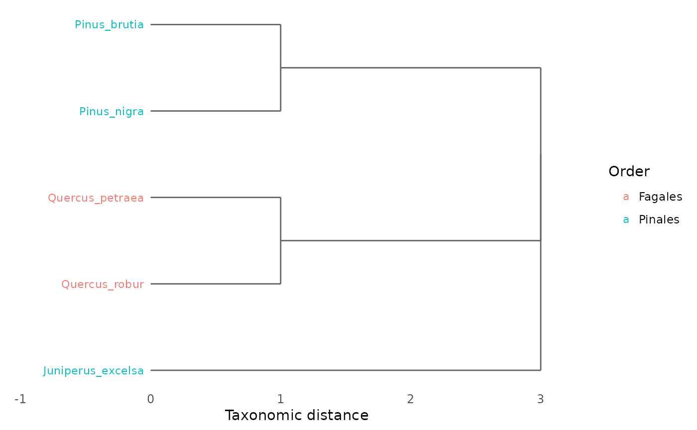
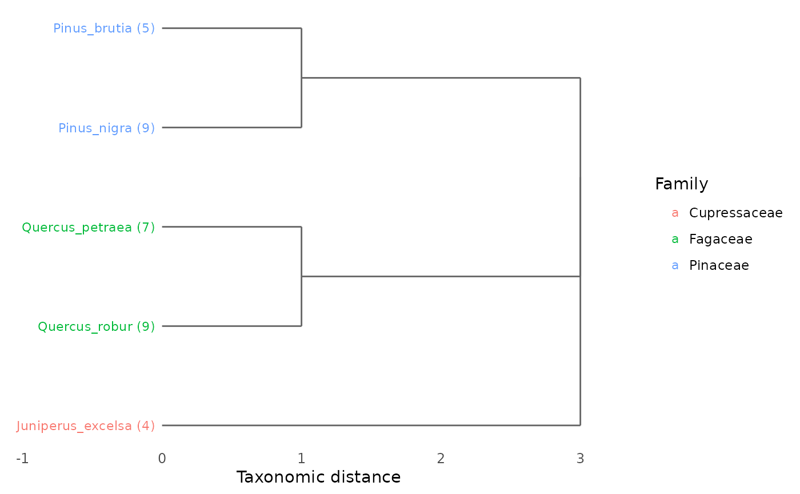

Visualizes a taxonomic hierarchy as a dendrogram (tree diagram) using ggplot2. The function converts the taxonomic distance matrix into a hierarchical clustering object and renders it as a horizontal dendrogram with species labels colored by a chosen taxonomic rank.
Usage
plot_taxonomic_tree(
tax_tree,
community = NULL,
color_by = NULL,
label_size = 3,
title = NULL
)Arguments
- tax_tree
A data frame representing the taxonomic hierarchy, as produced by
build_tax_tree. First column must be species names, subsequent columns are taxonomic ranks from lowest to highest (e.g., Genus, Family, Order).- community
Optional named numeric vector of species abundances. Names must match species in
tax_tree. When provided, abundance values are shown next to species labels.- color_by
Character string specifying which taxonomic rank to use for coloring species labels. Must match a column name in
tax_tree. IfNULL(default), the highest available rank is used.- label_size
Numeric value controlling the size of species labels. Default is 3.
- title
Optional character string for the plot title. If
NULL(default), no title is displayed.
Value
A ggplot object that can be further customized with
ggplot2 functions (e.g., + theme(), + labs()).
Details
The dendrogram is constructed from the pairwise taxonomic distance matrix
(computed via tax_distance_matrix) using hierarchical
clustering (hclust with method = "average").
Branch heights reflect taxonomic distance: species in the same genus
merge at the lowest level, while species in different orders merge at
the highest level.
When a community vector is provided, species labels are annotated
with abundance values in parentheses, e.g., "Quercus_coccifera (25)".
This function requires the ggplot2 package. If ggplot2 is not installed, the function will stop with an informative error message.
The clustering method used is UPGMA (Unweighted Pair Group Method with Arithmetic Mean), which is standard for taxonomic classification trees where branch lengths represent average distances between groups.
References
Clarke, K.R. & Warwick, R.M. (1998). A taxonomic distinctness index and its statistical properties. Journal of Applied Ecology, 35, 523–531.
See also
build_tax_tree for creating the taxonomy input,
tax_distance_matrix for the underlying distance calculation.
Examples
# \donttest{
# Build a simple taxonomic tree
tax <- build_tax_tree(
species = c("Quercus_robur", "Quercus_petraea", "Pinus_nigra",
"Pinus_brutia", "Juniperus_excelsa"),
Genus = c("Quercus", "Quercus", "Pinus", "Pinus", "Juniperus"),
Family = c("Fagaceae", "Fagaceae", "Pinaceae", "Pinaceae", "Cupressaceae"),
Order = c("Fagales", "Fagales", "Pinales", "Pinales", "Pinales")
)
# Basic dendrogram
plot_taxonomic_tree(tax)

# Color by Family, with abundance info
comm <- c(Quercus_robur = 25, Quercus_petraea = 18,
Pinus_nigra = 30, Pinus_brutia = 12,
Juniperus_excelsa = 8)
plot_taxonomic_tree(tax, community = comm, color_by = "Family")

# }